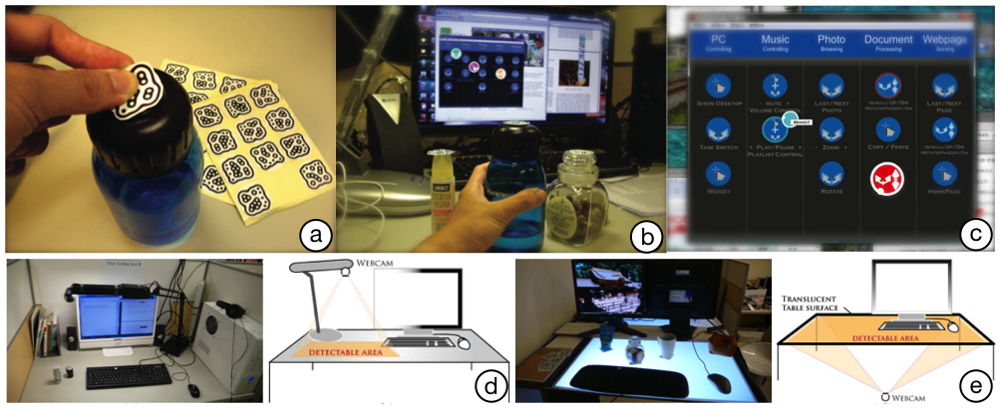

1National Taiwan University 2National Taiwan University of Science and Technology

iCon system exploits everyday objects as controllers by (a) pasting a pattern sticker on the objects and (b) binding the control operations through the (c) user interface. Two hardware deployments are proposed: (d) Eagle-eye (e) Under-desk.
Abstract
This work describes a novel approach to utilizing everyday objects of users as additional, auxiliary, and instant tabletop controllers. Based on this approach, a prototype platform, called iCon, is developed to explore the possible design. Field studies and user studies reveal that utilizing everyday objects such as auxiliary input devices might be appropriate under a multi-task scenario. User studies further demonstrate that daily objects can generally be applied in low precision circumstances, low engagement with selected objects, and medium-to-high frequency of use. The proposed approach allows users to interact with computers while not altering their original work environments.